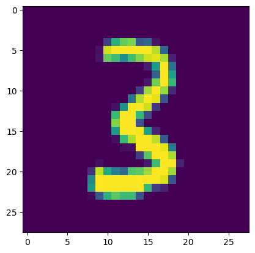

graph TB A[Load Data] --> B[Make Predictions] --> C[Compute Loss] --> D[Compute Gradients] --> E[Update Weights] --> F[Compute Metric] --> A
Implementing a Neural Network from Scratch
The DIY Guide to Digital Brain Building
Creating Models
Programming
Python
PyTorch
First I implement from scratch. Then I progressively reimplement with PyTorch. It is simpler than you think.
This notebook follows the fastai style guide.

In this notebook, I will implement a neural network from scratch, and iteratively reimplement with PyTorch. That is, I will implement each element of the training and inference process from scratch, before then using the corresponding element in PyTorch. This notebook assumes a prior understanding of the flow and pieces of a neural network.
To recap, the complete training loop of a neural network looks like this.
This notebook also serves to show the modular nature of PyTorch.
Let’s get started with some data.
Download Data
The goal of our model will be to classify digits from the MNIST dataset.
from pathlib import Path
MNIST_URL = 'https://github.com/mnielsen/neural-networks-and-deep-learning/blob/master/data/mnist.pkl.gz?raw=true'
d_path = Path('data')
d_path.mkdir(exist_ok=True)
d_path = d_path/'mnist.pkl.gz'from urllib.request import urlretrieve
if not d_path.exists(): urlretrieve(MNIST_URL, d_path)! ls -l datatotal 33312
-rw-r--r-- 1 salmannaqvi staff 17051982 May 12 12:37 mnist.pkl.gzimport gzip, pickle
from torch import tensor
with gzip.open(d_path, 'rb') as f: ((trn_x, trn_y), (vld_x, vld_y), _) = pickle.load(f, encoding='latin-1')
1trn_x, trn_y, vld_x, vld_y = map(tensor, [trn_x[:1000], trn_y[:1000], vld_x[:1000], vld_y[:1000]])- 1
- Taking 1000 samples each for the sake of speed.
A Single Neuron
A neuron comprises of a set of weights, the linear function, and the activation function.
graph LR A1[Weights] A2[Inputs] A1 & A2 --> B[Linear Combination] --> C[Activation Function]
Our dataset contains one thousand 28x28 pixel samples. Therefore, each sample has 28x28=784 inputs. Since we will be classifying digits, there will be 10 outputs–a probablity for each digit.
n, m = trn_x.shape
c = trn_y.max() + 1
n, m, c(1000, 784, tensor(10))Let’s have 50 neurons comprise the hidden layer.
nh = 50From these dimensions, we can create our appropriate weights…
import torch; torch.set_printoptions(precision=2, linewidth=140, sci_mode=False)
w1, b1 = torch.randn(m, nh), torch.zeros(nh)
w2, b2 = torch.randn(nh, 1), torch.zeros(1)
w1.shape, b1.shape, w2.shape, b2.shape(torch.Size([784, 50]), torch.Size([50]), torch.Size([50, 1]), torch.Size([1]))…and create our linear model!
def lin(x, w, b): return x @ w + bt = lin(vld_x, w1, b1); t.shapetorch.Size([1000, 50])vld_x.shape, w1.shape(torch.Size([1000, 784]), torch.Size([784, 50]))from fastcore.all import *
import torch.nn.functional as F
test_eq(lin(vld_x, w1, b1), F.linear(vld_x, w1.T, b1))Our implementation produces the same outputs as PyTorch’s implementation.
We now need to implement the activation function, which will be the ReLU (rectified linear unit). Any value less than 0 gets clipped to 0. There are multiple ways we can approach doing this, such as using torch.max.
?torch.maxDocstring: max(input) -> Tensor Returns the maximum value of all elements in the ``input`` tensor. .. warning:: This function produces deterministic (sub)gradients unlike ``max(dim=0)`` Args: input (Tensor): the input tensor. Example:: >>> a = torch.randn(1, 3) >>> a tensor([[ 0.6763, 0.7445, -2.2369]]) >>> torch.max(a) tensor(0.7445) .. function:: max(input, dim, keepdim=False, *, out=None) -> (Tensor, LongTensor) :noindex: Returns a namedtuple ``(values, indices)`` where ``values`` is the maximum value of each row of the :attr:`input` tensor in the given dimension :attr:`dim`. And ``indices`` is the index location of each maximum value found (argmax). If ``keepdim`` is ``True``, the output tensors are of the same size as ``input`` except in the dimension ``dim`` where they are of size 1. Otherwise, ``dim`` is squeezed (see :func:`torch.squeeze`), resulting in the output tensors having 1 fewer dimension than ``input``. .. note:: If there are multiple maximal values in a reduced row then the indices of the first maximal value are returned. Args: input (Tensor): the input tensor. dim (int): the dimension to reduce. keepdim (bool): whether the output tensor has :attr:`dim` retained or not. Default: ``False``. Keyword args: out (tuple, optional): the result tuple of two output tensors (max, max_indices) Example:: >>> a = torch.randn(4, 4) >>> a tensor([[-1.2360, -0.2942, -0.1222, 0.8475], [ 1.1949, -1.1127, -2.2379, -0.6702], [ 1.5717, -0.9207, 0.1297, -1.8768], [-0.6172, 1.0036, -0.6060, -0.2432]]) >>> torch.max(a, 1) torch.return_types.max(values=tensor([0.8475, 1.1949, 1.5717, 1.0036]), indices=tensor([3, 0, 0, 1])) .. function:: max(input, other, *, out=None) -> Tensor :noindex: See :func:`torch.maximum`. Type: builtin_function_or_method
torch.max(tensor([-5, 2, 3, -4]), tensor([0]))tensor([0, 2, 3, 0])def relu(x): return torch.max(x, tensor([0]))Another way is to use torch.clamp_min, which is more idiomatic for this case.
def relu(x): return x.clamp_min(0.)t = lin(vld_x, w1, b1)
test_eq(relu(t), F.relu(t))A single neuron can now be constructed.
def model(xb):
l1 = relu(lin(xb, w1, b1))
return lin(l1, w2, b2)res = model(vld_x); res.shapetorch.Size([1000, 1])Loss Function
With the forward pass being implemented, it is time to determine the loss. Even though we have a multi-class classification problem at hand, I will use mean squared error for simplicity. Later in this post, I will switch to cross entropy loss.
The Mean Squared Error (MSE) between two vectors can be represented as:
\[ \text{MSE} = \frac{\sum_{i=1}^{n} (y_i - x_i)^2}{n} \]
where \(x\) and \(y\) are vectors of length \(n\), and \(x_i\) and \(y_i\) represent the \(i\)-th elements of the vectors.
MSE in its most basic form looks like this.
\[ \text{MSE} = \frac{(y - x)^2}{1} \]
If we have multiple data points, then it looks like this.
\[ \text{MSE} = \frac{(y_1 - x_1)^2+(y_2 - x_2)^2+(y_3 - x_3)^2}{3} \]
The tensor holding the predictions and the tensor holding the targets have different shapes. Therefore, there are different ways in which both can be subtracted from each other.
res.shape, vld_y.shape(torch.Size([1000, 1]), torch.Size([1000]))(vld_y - res).shapetorch.Size([1000, 1000])(vld_y[:, None] - res).shapetorch.Size([1000, 1])res[:, 0].shape, res.squeeze().shape(torch.Size([1000]), torch.Size([1000]))(vld_y - res[:, 0]).shapetorch.Size([1000])However, it will be better to add a column to vld_y rather than remove a column from res, so as to keep the shape of all tensors consistent (i.e., all tensors having a row and column, as opposed to some having rows and columns, and others having only a column).
((vld_y[:, None] - res)**2).sum() / res.shape[0]tensor(717.17)def mse(preds, targs): return (targs[:, None] - preds).pow(2).mean()preds = model(trn_x); mse(preds, trn_y)tensor(648.87)test_eq(mse(preds, trn_y), F.mse_loss(preds, trn_y[:, None]))Backward Pass
Now comes the backward pass; the pass responsible for computing the gradients of our model’s weights.
For brevity, I will not explain why I compute the gradients the way I do. It can be taken that the way I compute them is due to the result of calculating the derivatives of the foward pass by hand. If you would like to explore how I did so, you can refer to my other blog post, Backpropagation Explained using English Words*.
In short, the derivatives compute to be the following.
When implementing backpropagation, it is better to implement the entire equation in pieces, by storing the result of each intermediate gradient. These intermediate gradients can then be reused to calculate the gradients of another variable.
Let’s prepare the pieces we’ll need and get started.
l1 = relu(lin(trn_x, w1, b1))
l2 = lin(l1, w2, b2)
loss = mse(l2, trn_y); losstensor(648.87)w1 Gradients
This is the maths to compute the gradients for w1, as also shown above.
\[ \frac{\partial \text{MSE}}{\partial \vec{\rm{w}}_1} = \begin{cases} 0 & \text{if } \vec{\rm{x}}_i \cdot \vec{\rm{w}}_1 + b_1 \leq 0 \\ \frac{2}{N} \sum^N_{i=1} (\text{max}(0, \vec{\rm{x}}_i \cdot \vec{\rm{w}}_1 + b_1) \cdot \vec{\rm{w}}_2 + b_2 - \vec{\rm{y}}_i) \cdot \vec{\rm{w}}^T_2 \cdot \vec{\rm{x}}_i^T & \text{if } \vec{\rm{x}}_i \cdot \vec{\rm{w}}_1 + b_1 > 0 \end{cases} \]
Here, you can see the individual pieces I will compute to implement this equation.
diff = trn_y[:, None] - l2; diff.shapetorch.Size([1000, 1])loss.g = (2/n) * diff; loss, loss.g.shape(tensor(648.87), torch.Size([1000, 1]))diff.g = -1 * loss.g; diff[:5], diff.shape(tensor([[-15.34],
[-33.46],
[-35.26],
[ -6.92],
[-21.55]]),
torch.Size([1000, 1]))(w2.shape, diff.g.shape), (w2.T.shape, diff.g[:, None].shape)((torch.Size([50, 1]), torch.Size([1000, 1])),
(torch.Size([1, 50]), torch.Size([1000, 1, 1])))(diff.g @ w2.T).shapetorch.Size([1000, 50])l2.g = diff.g @ w2.T; l2.g.shapetorch.Size([1000, 50])(l1 > 0).float()tensor([[0., 1., 1., ..., 0., 0., 0.],
[0., 0., 1., ..., 1., 0., 0.],
[1., 1., 1., ..., 0., 0., 1.],
...,
[0., 0., 0., ..., 0., 1., 0.],
[1., 1., 0., ..., 0., 0., 1.],
[0., 0., 1., ..., 0., 0., 0.]])l1.g = l2.g * (l1 > 0).float(); l1.g.shapetorch.Size([1000, 50])(l1.g.shape, trn_x.shape), (l1.g[:, None, :].shape, trn_x[..., None].shape)((torch.Size([1000, 50]), torch.Size([1000, 784])),
(torch.Size([1000, 1, 50]), torch.Size([1000, 784, 1])))w1.g = tensor([1, 2])w1.g = (l1.g[:, None, :] * trn_x[..., None]).sum(0); w1.g.shapetorch.Size([784, 50])(w1.shape, w1.g.shape), (w1.g.min(), w1.g.max())((torch.Size([784, 50]), torch.Size([784, 50])),
(tensor(-17.50), tensor(25.09)))Let’s verify our derivation is correct by comparing it to the gradients computed by PyTorch.
w1_ = w1.clone().requires_grad_();l1 = relu(lin(trn_x, w1_, b1))
l2 = lin(l1, w2, b2)
loss = mse(l2, trn_y)
loss.backward()w1_.gradtensor([[0., 0., 0., ..., 0., 0., 0.],
[0., 0., 0., ..., 0., 0., 0.],
[0., 0., 0., ..., 0., 0., 0.],
...,
[0., 0., 0., ..., 0., 0., 0.],
[0., 0., 0., ..., 0., 0., 0.],
[0., 0., 0., ..., 0., 0., 0.]])(w1.g.min(), w1.g.max()), (w1_.grad.min(), w1_.grad.max())((tensor(-17.50), tensor(25.09)), (tensor(-17.50), tensor(25.09)))test_close(w1.g, w1_.grad, eps=0.01)It is!
b1 Gradients
As previously mentioned, I can reuse the computed gradients to calculate the gradients for \(b_1\). For now though, I will show the entire implemention for easy reference and later, when we will encapsulate the backward pass, I will reuse the already computed gradients.
diff = trn_y[:, None] - l2
loss.g = (2/n) * diff
diff.g = loss.g * -1
l2.g = diff.g @ w2.T
l1.g = l2.g * (l1 > 0).float()
l1.g.shape, b1.shape(torch.Size([1000, 50]), torch.Size([50]))b1.g = (l1.g * 1).sum(0); b1.g.shapetorch.Size([50])b1.min(), b1.max()(tensor(0.), tensor(0.))trn_x Gradients
diff = trn_y[:, None] - l2
loss.g = (2/n) * diff
diff.g = loss.g * -1
l2.g = diff.g @ w2.T
l1.g = l2.g * (l1 > 0).float()
l1.g.shape, w1.shape(torch.Size([1000, 50]), torch.Size([784, 50]))trn_x.g = l1.g @ w1.Ttrn_x.g.min(), trn_x.g.max()(tensor(-2.85, grad_fn=<MinBackward1>), tensor(2.85, grad_fn=<MaxBackward1>))w1 Gradients
diff = trn_y[:, None] - l2
loss.g = (2/n) * diff
diff.g = loss.g * -1
diff.g.shape, l1.shape(torch.Size([1000, 1]), torch.Size([1000, 50]))(diff.g * l1).sum(0, keepdim=True).T.shapetorch.Size([50, 1])(diff.g[:, None, :] * l1[..., None]).sum(0).shapetorch.Size([50, 1])w2.g = (diff.g[:, None, :] * l1[..., None]).sum(0); w2.g.shapetorch.Size([50, 1])w2.g.min(), w2.g.max()(tensor(8.37, grad_fn=<MinBackward1>), tensor(388.44, grad_fn=<MaxBackward1>))b2 Gradients
diff = trn_y[:, None] - l2
loss.g = (2/n) * diff
diff.g = loss.g * -1
b2.g = (diff.g * 1).sum(0)
b2.g.shape, b2.shape(torch.Size([1]), torch.Size([1]))Verify
Let’s verify our remaining gradients.
w1_, b1_, w2_, b2_, trn_x_ = [lambda w: w.clone.requires_grad_() for w in [w1, b1, w2, b2, trn_x]]The expression above does not work to create copies. Rather than returning a cloned copy that requires gradients, lambda objects will be returned.
w1_, b1_, w2_, b2_, trn_x_ = map(lambda w: w.clone().requires_grad_(), [w1, b1, w2, b2, trn_x])tensor([[-2.81, -1.72, -0.97, ..., -0.29, -1.62, -0.45],
[-1.77, -0.17, 1.32, ..., -0.92, 0.76, 2.77],
[ 0.58, 2.13, -0.98, ..., 0.41, 1.50, 0.86],
...,
[-0.50, -1.90, -0.10, ..., -1.61, 0.78, -0.09],
[ 0.89, 0.50, 1.21, ..., 0.93, -0.37, -0.85],
[ 0.57, -0.50, -1.47, ..., 0.72, 1.64, -0.85]], requires_grad=True)w1_tensor([[-2.81, -1.72, -0.97, ..., -0.29, -1.62, -0.45],
[-1.77, -0.17, 1.32, ..., -0.92, 0.76, 2.77],
[ 0.58, 2.13, -0.98, ..., 0.41, 1.50, 0.86],
...,
[-0.50, -1.90, -0.10, ..., -1.61, 0.78, -0.09],
[ 0.89, 0.50, 1.21, ..., 0.93, -0.37, -0.85],
[ 0.57, -0.50, -1.47, ..., 0.72, 1.64, -0.85]], requires_grad=True)l1 = relu(lin(trn_x_, w1_, b1_))
l2 = lin(l1, w2_, b2_)
loss = mse(l2, trn_y)
loss.backward()for a, b in zip((w1, b1, w2, b2, trn_x), (w1_, b1_, w2_, b2_, trn_x_)): test_close(a.g, b.grad, eps=1e-2)All comparisons passed!
Encapsulate
Now that we have the forward and backward passes sorted, let us cohesively bring them together.
def forward(inps, targs):
l1 = relu(lin(inps, w1, b1))
l2 = lin(l1, w2, b2)
loss = mse(l2, targs)
return l1, l2, loss
def backward(inps, targs, l1, l2, loss):
diff = targs[:, None] - l2
loss.g = (2 / n) * diff
diff.g = loss.g * -1
w2.g = (diff.g[:, None, :] * l1[..., None]).sum(0)
b2.g = (diff.g * 1).sum(0)
l2.g = diff.g @ w2.T
l1.g = l2.g * (l1 > 0).float()
w1.g = (l1.g[:, None, :] * trn_x[..., None]).sum(0)
b1.g = (l1.g * 1).sum(0)
inps.g = l1.g @ w1.Tl1, l2, loss = forward(trn_x, trn_y)
backward(trn_x, trn_y, l1, l2, loss)def comp_grads(*ws):
for a, b in zip(ws, (w1_, b1_, w2_, b2_, trn_x_)): test_close(a.g, b.grad, eps=1e-2)comp_grads(w1, b1, w2, b2, trn_x)The backward function can be further refactored by taking the gradient computations of the linear layers common.
def backward(inps, targs, l1, l2, loss):
diff = targs[:, None] - l2
loss.g = (2/n) * diff
diff.g = loss.g * -1
lin_grad(l1, diff, w2, b2)
l2.g = diff.g @ w2.T
l1.g = l2.g * (l1 > 0).float()
lin_grad(inps, l1, w1, b1)
def lin_grad(inp, out, w, b):
inp.g = out.g @ w.T
w.g = (out.g[:, None, :] * inp[..., None]).sum(0)
b.g = (out.g * 1).sum(0)Previous implementation.
def backward(inps, targs, l1, l2, loss):
diff = targs[:, None] - l2
loss.g = (2 / n) * diff
diff.g = loss.g * -1
w2.g = (diff.g[:, None, :] * l1[..., None]).sum(0)
b2.g = (diff.g * 1).sum(0)
l2.g = diff.g @ w2.T
l1.g = l2.g * (l1 > 0).float()
w1.g = (l1.g[:, None, :] * trn_x[..., None]).sum(0)
b1.g = (l1.g * 1).sum(0)
inps.g = l1.g @ w1.Tbackward(trn_x, trn_y, *forward(trn_x, trn_y))comp_grads(w1, b1, w2, b2, trn_x)Class
Currently, we have functions that each separately handle a part of the network. For instance, mse only computes its respective portion of the forward pass: the mean squared error. backward is a separate function that handles the backward pass for all pieces of the network.
Let us change how this works, so each piece of the network also handles its respective backward pass. This means, mse will have the ability to compute both its forward pass and backward pass.
class MSE:
def __call__(self, inp, targs):
self.inp,self.targs = inp,targs
self.out = (inp[:, 0] - targs).pow(2).mean()
return self.out
def backward(self): self.inp.g = (2 / self.inp.shape[0]) * (self.inp[:, 0] - self.targs)[..., None]test_eq(MSE()(preds, trn_y), mse(preds, trn_y))class Lin:
def __init__(self, w, b): self.w,self.b = w,b
def __call__(self, inp):
self.inp = inp
self.out = self.inp @ self.w + self.b
return self.out
def backward(self):
self.inp.g = self.out.g @ self.w.T
self.w.g = (self.out.g[:, None, :] * self.inp[..., None]).sum(0)
self.b.g = self.out.g.sum(0)test_eq(Lin(w1, b1)(trn_x), lin(trn_x, w1, b1))class ReLU:
def __call__(self, inp):
self.inp = inp
self.out = self.inp.clamp_min(0.)
return self.out
def backward(self): self.inp.g = self.out.g * (self.inp > 0).float()test_eq(ReLU()(l1), relu(l1))class Model:
def __init__(self, w1, b1, w2, b2):
self.layers = [Lin(w1, b1), ReLU(), Lin(w2, b2)]
self.loss = MSE()
def __call__(self, inp, targs):
for l in self.layers: inp = l(inp)
return self.loss(inp, targs)
def backward(self):
self.loss.backward()
for l in self.layers[::-1]: l.backward()model = Model(w1, b1, w2, b2)
l = model(trn_x, trn_y)
model.backward()comp_grads(w1, b1, w2, b2, trn_x)Super Class
The classes we have created have common functionality, meaning their is still room for further refactoring. In particular, all the classes store the forward pass arguments as attributes if needed, have a __call__ dunder method that exectutes the forward pass, and a backward method for the backward pass.
class Module():
def __call__(self, *args):
self.args = args
self.out = self.forward(*args)
return self.out
def forward(self): raise Exception('Forward pass not implemented')
def backward(self): self.bwd(self.out, *self.args)
def bwd(self): raise Exception('Backward pass not implemented.')class MSE(Module):
def forward(self, inp, targs): return (inp[:, 0] - targs).pow(2).mean()
def bwd(self, out, inp, targs): inp.g = (2 / inp.shape[0]) * (inp[:, 0] - targs)[..., None]test_eq(MSE()(preds, trn_y), mse(preds, trn_y))class Lin(Module):
def __init__(self, w, b): self.w,self.b = w,b
def forward(self, inp): return inp @ self.w + self.b
def bwd(self, out, inp):
inp.g = out.g @ self.w.T
self.w.g = (out.g[:, None, :] * inp[..., None]).sum(0)
self.b.g = out.g.sum(0)
test_eq(Lin(w1, b1)(trn_x), lin(trn_x, w1, b1))class ReLU(Module):
def forward(self, inp): return inp.clamp_min(0.)
def bwd(self, out, inp): inp.g = out.g * (inp > 0).float()test_eq(ReLU()(l1), relu(l1))model = Model(w1, b1, w2, b2)
loss = model(trn_x, trn_y)
model.backward()comp_grads(w1, b1, w2, b2)And with that, this is the basic underlying paradigm in which PyTorch implements its components.
So let us now directly use PyTorch’s nn.Module to handle our components. There is an added benefit that nn.Module automatically keeps track of our gradients, so we do not need to implement the backward pass.
PyTorch’s nn.Module
w1.shape, n, m, c, b1.shape(torch.Size([784, 50]), 1000, 784, tensor(10), torch.Size([50]))from torch import nn
class Linear(nn.Module):
def __init__(self, n_inps, n_outs):
super().__init__()
self.w = torch.randn(n_inps, n_outs).requires_grad_()
self.b = torch.randn(n_outs).requires_grad_()
def forward(self, inp): return inp @ self.w + self.bF = nn.functional
class Model(nn.Module):
def __init__(self, n_inp, nh, n_out):
super().__init__()
self.layers = [Linear(n_inp, nh), nn.ReLU(), Linear(nh, n_out)]
def __call__(self, inp, targ):
for l in self.layers: inp = l(inp)
return F.mse_loss(inp, targ[:, None])model = Model(m, nh, 1)
loss = model(trn_x, trn_y.float())
loss.backward()model.layers[Linear(), ReLU(), Linear()]l0 = model.layers[0]; l0.b.gradtensor([ 42.11, -25.91, 0.15, 15.73, -16.16, 41.61, 13.73, 81.32, -8.91, 55.30, -14.12, -82.24, 12.02, -27.58, -9.48, -90.85,
-25.55, 34.89, -0.68, -14.24, 4.73, 49.70, -27.02, 19.55, 10.14, 38.86, 30.55, 74.17, 2.15, -2.62, -37.11, 14.04,
-12.12, 0.89, -0.99, -6.29, -1.15, 12.26, -9.73, -4.13, -1.53, 1.67, 1.34, -9.78, 20.50, 7.30, 62.45, 5.94,
-3.28, -18.14])Cross Entropy Loss
Let’s now implement a much more appropriate loss function for our multi-target problem: cross entropy loss.
Redefinition of Model, but without with loss function.
class Model(nn.Module):
def __init__(self, n_inps, nh, n_outs):
super().__init__()
self.layers = [nn.Linear(n_inps, nh), nn.ReLU(), nn.Linear(nh, n_outs)]
def __call__(self, x):
for l in self.layers: x = l(x)
return xmodel = Model(m, nh, c)
preds = model(trn_x); preds.shapetorch.Size([1000, 10])As I have defined here, cross entropy loss simply involves taking the logarithm of the softmax function, and multiplying the results with the one hot encoded targets.
Softmax, a multi-class generalization of the sigmoid function, involves taking the exponent of each prediction, and dividing each resulting value with the sum of all predictions to the exponent.
\[ \text{S}(y_i) = \frac{e^{y_i}}{\sum_{j} e^{y_j}} \]
Sigmoid Function Definition
\[ \sigma(y) = \frac{1}{1 + e^{-y}} \]
Let’s begin by first taking the logarithm of the softmax function.
def log_softmax(x): return ((x.exp() / x.exp().sum(-1, keepdim=True))).log()
log_softmax(preds)tensor([[-2.40, -2.33, -2.25, ..., -2.33, -2.40, -2.34],
[-2.37, -2.44, -2.21, ..., -2.30, -2.34, -2.28],
[-2.37, -2.45, -2.16, ..., -2.24, -2.40, -2.40],
...,
[-2.36, -2.45, -2.20, ..., -2.24, -2.39, -2.37],
[-2.34, -2.41, -2.28, ..., -2.20, -2.53, -2.25],
[-2.43, -2.37, -2.21, ..., -2.26, -2.40, -2.37]], grad_fn=<LogBackward0>)F.log_softmax(preds, dim=-1)tensor([[-2.40, -2.33, -2.25, ..., -2.33, -2.40, -2.34],
[-2.37, -2.44, -2.21, ..., -2.30, -2.34, -2.28],
[-2.37, -2.45, -2.16, ..., -2.24, -2.40, -2.40],
...,
[-2.36, -2.45, -2.20, ..., -2.24, -2.39, -2.37],
[-2.34, -2.41, -2.28, ..., -2.20, -2.53, -2.25],
[-2.43, -2.37, -2.21, ..., -2.26, -2.40, -2.37]], grad_fn=<LogSoftmaxBackward0>)test_close(log_softmax(preds).detach(), F.log_softmax(preds, dim=-1).detach())Our implementation involves division. According to the rule, \(\lg\left(\frac{a}{b}\right) = \lg(a) - \lg(b)\), we can simplify our computation by subtracting the numerators and denominators instead.
def log_softmax(x): return x.exp().log() - x.exp().sum(-1, keepdim=True).log()log_softmax(preds)tensor([[-2.40, -2.33, -2.25, ..., -2.33, -2.40, -2.34],
[-2.37, -2.44, -2.21, ..., -2.30, -2.34, -2.28],
[-2.37, -2.45, -2.16, ..., -2.24, -2.40, -2.40],
...,
[-2.36, -2.45, -2.20, ..., -2.24, -2.39, -2.37],
[-2.34, -2.41, -2.28, ..., -2.20, -2.53, -2.25],
[-2.43, -2.37, -2.21, ..., -2.26, -2.40, -2.37]], grad_fn=<SubBackward0>)Our implementation has an issue though: it is unstable. Anything involving exponents is inherently unstable. Have a large enough value, and we converge to infinity relatively quickly.
for x in range(0, 101, 10): print(f'e^{x}={torch.exp(tensor(x))}')e^0=1.0
e^10=22026.46484375
e^20=485165184.0
e^30=10686474223616.0
e^40=2.353852703404196e+17
e^50=5.184705457665547e+21
e^60=1.1420073962419164e+26
e^70=2.515438700355918e+30
e^80=5.540622484676759e+34
e^90=inf
e^100=infFortunately, there is trick to overcoming this known as the LogSumExp simplification.
\[ \lg\left(\sum^n_{j=1} e^{x_j}\right) = \lg\left(e^a \sum^n_{j=1} \frac{e^{x_j}}{e^a}\right) = \lg\left(e^a \sum^n_{j=1} e^{x_j - a}\right) = a + \lg\left(\sum^n_{j=1} e^{x_j - a}\right) \]
\(a\) is the largest element in \(x\).
To begin, we need to get the largest value in each sample.
max = preds.max(-1)[0]; max.shape, preds.shape(torch.Size([1000]), torch.Size([1000, 10]))?torch.maxDocstring: max(input) -> Tensor Returns the maximum value of all elements in the ``input`` tensor. .. warning:: This function produces deterministic (sub)gradients unlike ``max(dim=0)`` Args: input (Tensor): the input tensor. Example:: >>> a = torch.randn(1, 3) >>> a tensor([[ 0.6763, 0.7445, -2.2369]]) >>> torch.max(a) tensor(0.7445) .. function:: max(input, dim, keepdim=False, *, out=None) -> (Tensor, LongTensor) :noindex: Returns a namedtuple ``(values, indices)`` where ``values`` is the maximum value of each row of the :attr:`input` tensor in the given dimension :attr:`dim`. And ``indices`` is the index location of each maximum value found (argmax). If ``keepdim`` is ``True``, the output tensors are of the same size as ``input`` except in the dimension ``dim`` where they are of size 1. Otherwise, ``dim`` is squeezed (see :func:`torch.squeeze`), resulting in the output tensors having 1 fewer dimension than ``input``. .. note:: If there are multiple maximal values in a reduced row then the indices of the first maximal value are returned. Args: input (Tensor): the input tensor. dim (int): the dimension to reduce. keepdim (bool): whether the output tensor has :attr:`dim` retained or not. Default: ``False``. Keyword args: out (tuple, optional): the result tuple of two output tensors (max, max_indices) Example:: >>> a = torch.randn(4, 4) >>> a tensor([[-1.2360, -0.2942, -0.1222, 0.8475], [ 1.1949, -1.1127, -2.2379, -0.6702], [ 1.5717, -0.9207, 0.1297, -1.8768], [-0.6172, 1.0036, -0.6060, -0.2432]]) >>> torch.max(a, 1) torch.return_types.max(values=tensor([0.8475, 1.1949, 1.5717, 1.0036]), indices=tensor([3, 0, 0, 1])) .. function:: max(input, other, *, out=None) -> Tensor :noindex: See :func:`torch.maximum`. Type: builtin_function_or_method
Then we can simply implement the rest of the algorithm.
(preds - max[..., None]).shapetorch.Size([1000, 10])# Output hidden to prevent endless scrolling.
max[..., None] + (preds - max[..., None]).exp().sum(-1, keepdim=True).log()test_close(torch.exp(preds).sum(-1, keepdim=True).log(), max[..., None] + (preds - max[..., None]).exp().sum(-1, keepdim=True).log())def logsumexp(x):
max = x.max(-1)[0]
return max[..., None] + (preds - max[..., None]).exp().sum(-1, keepdim=True).log()logsumexp(preds).shapetorch.Size([1000, 1])test_close(logsumexp(preds), preds.logsumexp(-1)[..., None])Let’s compare how quicker our new implemenation is compared to the previous one.
%timeit log_softmax(preds)337 µs ± 75.8 µs per loop (mean ± std. dev. of 7 runs, 1,000 loops each)def log_softmax(x): return x - logsumexp(x)log_softmax(preds).shapetorch.Size([1000, 10])%timeit log_softmax(preds)190 µs ± 56 µs per loop (mean ± std. dev. of 7 runs, 10,000 loops each)Much faster!
All that is left now is to multiply our softmax predictions with the one hot encoded targets, and sum the resulting vector. However, due to the nature of our targets, we can employ a nifty trick that removes the need to create a tensor of one hot encoded targets: integer array indexing.
Integer Array Indexing
t = tensor([[1, 2, 3], [4, 5, 6], [7, 8, 9]]); ttensor([[1, 2, 3],
[4, 5, 6],
[7, 8, 9]])A fancy name for a simple concept, integer array indexing allows one to access elements in a tensor by simply specifing lists of indices.
t[[0, 1, 2], [0, 1, 2]]tensor([1, 5, 9])It is best to think of the tensor as a grid of coordinates, with the first coordinate representing the row, and the second coordinate representing the column. Elements 1, 5, and 9 are at (0, 0), (1, 1), and (2, 2).
1, 6, and 8 are at (0, 0), (1, 2), and (2, 1)
t[[0, 1, 2], [0, 2, 1]]tensor([1, 6, 8])3 and 8 are at (0, 2) and (2, 1).
t[[0, 2], [2, 1]]tensor([3, 8])Our targets consist of the integers from 0 to 9. Each row, or sample, in our predictions tensor represents a set of probabilites for each target.
This means we can directly access the prediction for the correct target through integer array indexing.
trn_y[:3]tensor([5, 0, 4])The targets for the first three samples are 5, 0, and, 4. Instead of manually specifying the targets when obtaining the predictions for the first three samples…
sm_preds = log_softmax(preds); sm_preds.shapetorch.Size([1000, 10])sm_preds[0, 5], sm_preds[1, 0], sm_preds[2, 4](tensor(-2.27, grad_fn=<SelectBackward0>),
tensor(-2.37, grad_fn=<SelectBackward0>),
tensor(-2.26, grad_fn=<SelectBackward0>))…we can use the targets themselves to directly obtain our predictions.
sm_preds[[0, 1, 2], trn_y[:3]]tensor([-2.27, -2.37, -2.26], grad_fn=<IndexBackward0>)And now, our implementation can be completed.
def nll(preds, targs): return -preds[range(targs.shape[0]), targs].mean()loss = nll(sm_preds, trn_y); losstensor(2.30, grad_fn=<NegBackward0>)1test_close(F.nll_loss(F.log_softmax(preds, -1), trn_y), loss, 1e-3)- 1
-
The difference between
F.cross_entropyandF.nll_lossis that the former expects the input to be the raw model outputs, where as the latter expects the input to already be logarithmic probabilities. It can be said thatF.nll_losscomputes cross entropy loss by starting at an intemediary step.
Basic Training Loop
Okay, now we have all the components of a machine that is the neural network:
- the linear function,
- the activation function,
- the loss function,
- and the backward pass.
It is time to get the machine up and running as a whole. It’s time to get the training loop looping.
graph TB A[Load Data] --> B[Make Predictions] --> C[Compute Loss] --> D[Compute Gradients] --> E[Update Weights] --> F[Compute Metric] --> A
loss_func = F.cross_entropybs = 50
xb = trn_x[0:bs]
preds = model(xb); preds[0], preds.shape(tensor([-0.08, -0.01, 0.08, 0.11, -0.02, 0.06, 0.13, -0.00, -0.08, -0.01], grad_fn=<SelectBackward0>),
torch.Size([50, 10]))yb = trn_y[:bs]; ybtensor([5, 0, 4, 1, 9, 2, 1, 3, 1, 4, 3, 5, 3, 6, 1, 7, 2, 8, 6, 9, 4, 0, 9, 1, 1, 2, 4, 3, 2, 7, 3, 8, 6, 9, 0, 5, 6, 0, 7, 6, 1, 8, 7, 9,
3, 9, 8, 5, 9, 3])loss_func(preds, yb)tensor(2.30, grad_fn=<NllLossBackward0>)We’ll use accuracy as our metric.
preds.argmax(-1)tensor([6, 2, 2, 2, 5, 2, 5, 2, 5, 2, 2, 2, 3, 2, 5, 5, 2, 2, 2, 5, 6, 3, 5, 2, 5, 2, 2, 3, 3, 2, 2, 2, 5, 2, 2, 2, 2, 2, 2, 2, 5, 2, 5, 5,
2, 2, 2, 2, 5, 5])(preds.argmax(-1) == yb).sum()tensor(5)def accuracy(preds, yb): return ((preds.argmax(-1) == yb).sum()) / yb.shape[0]accuracy(preds, yb)tensor(0.10)test_close(accuracy(preds, yb), (preds.argmax(-1) == yb).float().mean())def report(loss, preds, yb): print(f'Loss: {loss:.2f}; Accuracy: {accuracy(preds, yb):.2f}')lr, epochs = .5, 3
xb, yb = trn_x[:bs], trn_y[:bs]
preds = model(xb)
report(loss_func(preds, yb), preds, yb)Loss: 2.30; Accuracy: 0.10The training loop can now be assembled.
for epoch in range(epochs):
for i in range(0, n, bs):
s = slice(i, min(n, bs+i))
xb, yb = trn_x[s], trn_y[s]
preds = model(xb)
loss = loss_func(preds, yb)
loss.backward()
with torch.no_grad():
for l in model.layers:
if hasattr(l, 'weight'):
l.weight -= l.weight.grad * lr
l.bias -= l.bias.grad * lr
l.weight.grad.zero_()
l.bias .grad.zero_()
report(loss, preds, yb)Loss: 1.01; Accuracy: 0.66
Loss: 0.45; Accuracy: 0.88
Loss: 0.37; Accuracy: 0.82Let’s take a closer look at how we slice: s = slice(i, min(n, bs+i)). We have to use min to prevent the slices from going out of bounds.
?sliceInit signature: slice(self, /, *args, **kwargs) Docstring: slice(stop) slice(start, stop[, step]) Create a slice object. This is used for extended slicing (e.g. a[0:10:2]). Type: type Subclasses:
for i in range(0, n, bs): print(slice(i, min(n, bs+i)))slice(0, 50, None)
slice(50, 100, None)
slice(100, 150, None)
slice(150, 200, None)
slice(200, 250, None)
slice(250, 300, None)
slice(300, 350, None)
slice(350, 400, None)
slice(400, 450, None)
slice(450, 500, None)
slice(500, 550, None)
slice(550, 600, None)
slice(600, 650, None)
slice(650, 700, None)
slice(700, 750, None)
slice(750, 800, None)
slice(800, 850, None)
slice(850, 900, None)
slice(900, 950, None)
slice(950, 1000, None)Simply adding bs to n at the end parameter for range will not work.
for i in range(0, n+bs, bs): print(slice(i, bs+i))slice(0, 50, None)
slice(50, 100, None)
slice(100, 150, None)
slice(150, 200, None)
slice(200, 250, None)
slice(250, 300, None)
slice(300, 350, None)
slice(350, 400, None)
slice(400, 450, None)
slice(450, 500, None)
slice(500, 550, None)
slice(550, 600, None)
slice(600, 650, None)
slice(650, 700, None)
slice(700, 750, None)
slice(750, 800, None)
slice(800, 850, None)
slice(850, 900, None)
slice(900, 950, None)
slice(950, 1000, None)
slice(1000, 1050, None)Parameters & Optimizers
Currently, we update our weights by checking whether a layer in our network has a weight attribute.
for epoch in range(epochs):
for i in range(0, n, bs):
s = slice(i, min(n, bs+i))
xb, yb = trn_x[s], trn_y[s]
preds = model(xb)
loss = loss_func(preds, yb)
loss.backward()
with torch.no_grad():
for l in model.layers:
if hasattr(l, 'weight'):
l.weight -= l.weight.grad * lr
l.bias -= l.bias.grad * lr
l.weight.grad.zero_()
l.bias .grad.zero_()
report(loss, preds, yb)PyTorch actually keeps track which layers have weights. Let us explore.
Here, PyTorch knows that our model has a linear layer with 3 inputs and 4 outputs.
m1 = nn.Module()
m1.foo = nn.Linear(3, 4); m1Module(
(foo): Linear(in_features=3, out_features=4, bias=True)
)list(m1.named_children())[('foo', Linear(in_features=3, out_features=4, bias=True))]In a similar manner, we can access the layer’s parameters.
list(m1.foo.parameters())[Parameter containing:
tensor([[-0.37, 0.20, -0.39],
[-0.47, 0.00, 0.18],
[ 0.51, -0.35, 0.36],
[ 0.12, 0.10, -0.03]], requires_grad=True),
Parameter containing:
tensor([ 0.31, -0.42, 0.35, 0.16], requires_grad=True)]However, this approach will require us to loop through all layers to access all parameters. PyTorch instead provides a way to directly return the parameters of all layers.
list(m1.parameters())[Parameter containing:
tensor([[-0.37, 0.20, -0.39],
[-0.47, 0.00, 0.18],
[ 0.51, -0.35, 0.36],
[ 0.12, 0.10, -0.03]], requires_grad=True),
Parameter containing:
tensor([ 0.31, -0.42, 0.35, 0.16], requires_grad=True)]class MLP(nn.Module):
def __init__(self, n_inps, nh, n_outs):
super().__init__()
self.l1 = nn.Linear(n_inps, nh)
self.l2 = nn.Linear(nh, n_outs)
self.relu = nn.ReLU()
def forward(self, x): return self.l2(self.relu(self.l1(x)))n, m, nh, c(1000, 784, 50, tensor(10))model = MLP(m, nh, c); model.l1Linear(in_features=784, out_features=50, bias=True)modelMLP(
(l1): Linear(in_features=784, out_features=50, bias=True)
(l2): Linear(in_features=50, out_features=10, bias=True)
(relu): ReLU()
)for name, l in model.named_children(): print(f'{name}: {l}')l1: Linear(in_features=784, out_features=50, bias=True)
l2: Linear(in_features=50, out_features=10, bias=True)
relu: ReLU()for p in model.parameters(): print(p.shape)torch.Size([50, 784])
torch.Size([50])
torch.Size([10, 50])
torch.Size([10])Since we can directly access the parameters, we do not need to check whether a certain parameter exists.
def fit():
for epoch in range(epochs):
for i in range(0, n, bs):
s = slice(i, min(n, bs+i))
xb, yb = trn_x[s], trn_y[s]
preds = model(xb)
loss = loss_func(preds, yb)
loss.backward()
with torch.no_grad():
for p in model.parameters(): p -= p.grad * lr
1 model.zero_grad()
report(loss, preds, yb)- 1
-
torch.zero_grad()can also be called directly on the model itself.
fit()Loss: 0.84; Accuracy: 0.74
Loss: 0.45; Accuracy: 0.88
Loss: 0.37; Accuracy: 0.84Let us implement this functionality–where the model itself knows what its layers and parameters are–ourselves.
To do so, we will need to define the __setattr__ dunder method, where any submodules defined are registered as parameters of the model.
class MyModule:
def __init__(self, n_inps, nh, n_outs):
self._modules = {}
self.l1 = nn.Linear(n_inps, nh)
self.l2 = nn.Linear(nh, n_outs)
def __setattr__(self, k, v):
if not k.startswith('_'): self._modules[k] = v
1 super().__setattr__(k, v)
def __repr__(self): return f'{self._modules}'
def parameters(self):
for l in self._modules.values(): yield from l.parameters()- 1
-
class MyModuleis actuallyclass MyModule(object)
mdl = MyModule(m, nh, c); mdl, model({'l1': Linear(in_features=784, out_features=50, bias=True), 'l2': Linear(in_features=50, out_features=10, bias=True)},
MLP(
(l1): Linear(in_features=784, out_features=50, bias=True)
(l2): Linear(in_features=50, out_features=10, bias=True)
(relu): ReLU()
))for p in mdl.parameters(): print(p.shape)torch.Size([50, 784])
torch.Size([50])
torch.Size([10, 50])
torch.Size([10])Registering Modules
To use our original approach, where a list of layers are specified, we can use the add_module method provided by PyTorch.
?nn.Module.add_moduleSignature: nn.Module.add_module( self, name: str, module: Optional[ForwardRef('Module')], ) -> None Docstring: Adds a child module to the current module. The module can be accessed as an attribute using the given name. Args: name (str): name of the child module. The child module can be accessed from this module using the given name module (Module): child module to be added to the module. File: ~/mambaforge/envs/default/lib/python3.10/site-packages/torch/nn/modules/module.py Type: function
layers = [nn.Linear(m, nh), nn.ReLU(), nn.Linear(nh, c)]from functools import reduce
class Model(nn.Module):
def __init__(self, layers):
super().__init__()
self.layers = layers
for i, l in enumerate(self.layers): self.add_module(f'layer_{i}', l)
1 def forward(self, x): return reduce(lambda val, layer: layer(val), self.layers, x)- 1
-
In essence,
reduceuses the output of the function as input to the same function in the next iteration.
?reduceDocstring: reduce(function, iterable[, initial]) -> value Apply a function of two arguments cumulatively to the items of a sequence or iterable, from left to right, so as to reduce the iterable to a single value. For example, reduce(lambda x, y: x+y, [1, 2, 3, 4, 5]) calculates ((((1+2)+3)+4)+5). If initial is present, it is placed before the items of the iterable in the calculation, and serves as a default when the iterable is empty. Type: builtin_function_or_method
reduce(lambda x,y: x+y, [1, 2, 3, 4, 5])15model = Model(layers); modelModel(
(layer_0): Linear(in_features=784, out_features=50, bias=True)
(layer_1): ReLU()
(layer_2): Linear(in_features=50, out_features=10, bias=True)
)model(xb).shapetorch.Size([50, 10])Alternatively, nn.ModuleList can do the registration for us.
?nn.ModuleListInit signature: nn.ModuleList( modules: Optional[Iterable[torch.nn.modules.module.Module]] = None, ) -> None Docstring: Holds submodules in a list. :class:`~torch.nn.ModuleList` can be indexed like a regular Python list, but modules it contains are properly registered, and will be visible by all :class:`~torch.nn.Module` methods. Args: modules (iterable, optional): an iterable of modules to add Example:: class MyModule(nn.Module): def __init__(self): super().__init__() self.linears = nn.ModuleList([nn.Linear(10, 10) for i in range(10)]) def forward(self, x): # ModuleList can act as an iterable, or be indexed using ints for i, l in enumerate(self.linears): x = self.linears[i // 2](x) + l(x) return x Init docstring: Initializes internal Module state, shared by both nn.Module and ScriptModule. File: ~/mambaforge/envs/default/lib/python3.10/site-packages/torch/nn/modules/container.py Type: type Subclasses: ParametrizationList
class SequentialModel(nn.Module):
def __init__(self, layers):
super().__init__()
self.layers = nn.ModuleList(layers)
def forward(self, x): return reduce(lambda x, layer: layer(x), self.layers, x)model = SequentialModel(layers); modelSequentialModel(
(layers): ModuleList(
(0): Linear(in_features=784, out_features=50, bias=True)
(1): ReLU()
(2): Linear(in_features=50, out_features=10, bias=True)
)
)fit()Loss: 0.93; Accuracy: 0.78
Loss: 0.52; Accuracy: 0.86
Loss: 0.38; Accuracy: 0.86model = nn.Sequential(nn.Linear(m, nh), nn.ReLU(), nn.Linear(nh, c)); modelSequential(
(0): Linear(in_features=784, out_features=50, bias=True)
(1): ReLU()
(2): Linear(in_features=50, out_features=10, bias=True)
)fit()Loss: 0.88; Accuracy: 0.74
Loss: 0.48; Accuracy: 0.86
Loss: 0.39; Accuracy: 0.88Optimizer
Optimizer is simply the name given to the algorithm that updates the weights.
class Optimizer:
def __init__(self, params, lr=0.5): self.params,self.lr = list(params), lr
def step(self):
with torch.no_grad():
for p in self.params: p -= p.grad * self.lr
def zero_grad(self):
for p in self.params: p.grad.data.zero_()model = nn.Sequential(nn.Linear(m, nh), nn.ReLU(), nn.Linear(nh, c))
opt = Optimizer(model.parameters())The weight update step can now be cleaned up by using opt.step() and opt.zero_grad() instead.
def fit():
for epoch in range(epochs):
for i in range(0, n, bs):
s = slice(i, min(n, i+bs))
xb, yb = trn_x[s], trn_y[s]
preds = model(xb)
loss = loss_func(preds, yb)
loss.backward()
with torch.no_grad():
for p in model.parameters(): p -= p.grad * lr
model.zero_grad()
report(loss, preds, yb)def fit():
for epoch in range(epochs):
for i in range(0, n, bs):
s = slice(i, min(n, i+bs))
xb, yb = trn_x[s], trn_y[s]
preds = model(xb)
loss = loss_func(preds, yb)
loss.backward()
opt.step()
opt.zero_grad()
report(loss, preds, yb)fit()Loss: 0.89; Accuracy: 0.74
Loss: 0.51; Accuracy: 0.88
Loss: 0.41; Accuracy: 0.86from torch import optim
def get_model():
model = nn.Sequential(nn.Linear(m, nh), nn.ReLU(), nn.Linear(nh, c))
return model, optim.SGD(model.parameters(), lr=lr)model, opt = get_model()
loss_func(model(xb), yb)tensor(2.32, grad_fn=<NllLossBackward0>)fit()Loss: 0.82; Accuracy: 0.78
Loss: 0.42; Accuracy: 0.90
Loss: 0.35; Accuracy: 0.86Dataset and Dataloader
I sometimes get confuzzled between the two terms, with regard to what each component actually does. The best way to think about these terms is that a dataset simply stores data in a massive warehouse, while a dataloader takes data from the dataset and tosses them into crates known as batches.
As it currently is, we iterate through our dataset by obtaining a slice object, and then slicing out some data to form a batch.
for i in range(0, n, bs):
s = slice(i, min(n, bs+i))
xb, yb = trn_x[s], trn_y[s]We will now simplify how we approach this logic.
Dataset
The first point of simplification is to create a single dataset that will return both a sample and its associated target, from a single index. This will prevent us from having to index into two separate tensors.
class Dataset():
def __init__(self, x, y): self.x, self.y = x, y
def __len__(self): return len(self.x)
def __getitem__(self, i): return self.x[i], self.y[i]trn_ds, vld_ds = Dataset(trn_x, trn_y), Dataset(vld_x, vld_y)
assert len(trn_ds) == len(trn_x)
assert len(vld_ds) == len(vld_x)xb, yb = trn_ds[0:5]
assert xb.shape == (5, 28*28)
assert yb.shape == (5,)
xb, yb(tensor([[0., 0., 0., ..., 0., 0., 0.],
[0., 0., 0., ..., 0., 0., 0.],
[0., 0., 0., ..., 0., 0., 0.],
[0., 0., 0., ..., 0., 0., 0.],
[0., 0., 0., ..., 0., 0., 0.]]),
tensor([5, 0, 4, 1, 9]))model, opt = get_model()
for epoch in range(epochs):
for i in range(0, n, bs):
xb, yb = trn_ds[i:min(n, bs+i)]
preds = model(xb)
loss = loss_func(preds, yb)
loss.backward()
opt.step()
opt.zero_grad()
report(loss, preds, yb)Loss: 1.19; Accuracy: 0.70
Loss: 0.50; Accuracy: 0.88
Loss: 0.34; Accuracy: 0.88DataLoader
Let us now abstract away how the data from our datasets is loaded, by putting the logic that fetches data from the dataset…
for i in range(0, n, bs):
xb, yb = trn_ds[i:min(n,i+bs)]
...…into a class that we can call a dataloader.
for xb, yb in train_dl:
...class DataLoader():
def __init__(self, ds, bs): self.ds,self.bs = ds,bs
def __iter__(self):
for i in range(0, len(self.ds), self.bs): yield self.ds[i:min(len(self.ds), i+self.bs)]trn_dl, vld_dl = DataLoader(trn_ds, bs), DataLoader(vld_ds, bs)next(iter(vld_dl))(tensor([[0., 0., 0., ..., 0., 0., 0.],
[0., 0., 0., ..., 0., 0., 0.],
[0., 0., 0., ..., 0., 0., 0.],
...,
[0., 0., 0., ..., 0., 0., 0.],
[0., 0., 0., ..., 0., 0., 0.],
[0., 0., 0., ..., 0., 0., 0.]]),
tensor([3, 8, 6, 9, 6, 4, 5, 3, 8, 4, 5, 2, 3, 8, 4, 8, 1, 5, 0, 5, 9, 7, 4, 1, 0, 3, 0, 6, 2, 9, 9, 4, 1, 3, 6, 8, 0, 7, 7, 6, 8, 9, 0, 3,
8, 3, 7, 7, 8, 4]))xb, yb = next(iter(vld_dl)); xb.shapetorch.Size([50, 784])import matplotlib.pyplot as plt
plt.imshow(xb[0].view(28, 28)); yb[0]tensor(3)
def fit():
for epoch in range(epochs):
for xb, yb in trn_dl:
preds = model(xb)
loss = loss_func(preds, yb)
loss.backward()
opt.step()
opt.zero_grad()
report(loss, preds, yb)model, opt = get_model()
fit()Loss: 0.79; Accuracy: 0.82
Loss: 0.49; Accuracy: 0.84
Loss: 0.30; Accuracy: 0.88And just like that, we have abstracted our loading logic from three lines…
for i in range(0, n, bs):
s = slice(i, min(n, bs+i))
xb, yb = trn_x[s], trn_y[s]
...…to a much more readable single line.
for xb, yb in trn_dl:
...Random Sampling
Sampling is the method by which the dataloader selects indices from the dataset to load. Sampling from the training set should be random (due to the nature of our data), but not for the validation set.
Therefore, we will need to create an additional class for the our dataloader; a component that tells the dataloader from which indices to load data from the dataset.
import random
?random.shuffleSignature: random.shuffle(x, random=None) Docstring: Shuffle list x in place, and return None. Optional argument random is a 0-argument function returning a random float in [0.0, 1.0); if it is the default None, the standard random.random will be used. File: ~/mambaforge/envs/default/lib/python3.10/random.py Type: method
class Sampler():
def __init__(self, ds, shuffle=False): self.n,self.shuffle = len(ds),shuffle
def __iter__(self):
res = list(range(self.n))
if self.shuffle: random.shuffle(res)
return iter(res)ss = Sampler(trn_ds); ss<__main__.Sampler at 0x150dddd80>try: print(next(ss))
except: passThis does not work because __iter__ is not being called. __iter__ only gets called when we wrap the class with iter().
try: print(next(iter(ss)))
except: pass0it = iter(ss); it<list_iterator at 0x150996fe0>for o in range(5): print(next(it))0
1
2
3
4The Sampler currently returns a single index in each iteration. We need to change that so a number of indices (equal to our batch size) is returned in each iteration. We can do this through a fancy slicing function known as islice.
from itertools import islice
?isliceInit signature: islice(self, /, *args, **kwargs) Docstring: islice(iterable, stop) --> islice object islice(iterable, start, stop[, step]) --> islice object Return an iterator whose next() method returns selected values from an iterable. If start is specified, will skip all preceding elements; otherwise, start defaults to zero. Step defaults to one. If specified as another value, step determines how many values are skipped between successive calls. Works like a slice() on a list but returns an iterator. Type: type Subclasses:
iter returns a single element from an iterable at a time. islice is a type of iterator that returns \(x\) elements from an iterable at a time. It is an, erm, iterative slice.
list(islice(ss, 5))[0, 1, 2, 3, 4]Let’s define an additional class that takes a sampler, and assembles its output into batches.
class BatchSampler:
def __init__(self, sampler, bs, drop_last=False): store_attr()
1 def __iter__(self): yield from chunked(iter(self.sampler), self.bs, drop_last=self.drop_last)- 1
-
fastcore’schunkedfunction has the exact same functionality asislice, but with some extra quality of life features. This includes being able to specify how many chunks, or slices, we want back (rather than the number of elements in a chunk), as well as being able to specify whether we would like to drop, or keep, chunks that are smaller than our specified chunk size. This latter option is what we will use–it will abstract away themincheck we use in ourDataLoader(self.ds[i:min(len(self.ds), i+self.bs)]).
??chunkedSignature: chunked(it, chunk_sz=None, drop_last=False, n_chunks=None) Source: def chunked(it, chunk_sz=None, drop_last=False, n_chunks=None): "Return batches from iterator `it` of size `chunk_sz` (or return `n_chunks` total)" assert bool(chunk_sz) ^ bool(n_chunks) if n_chunks: chunk_sz = max(math.ceil(len(it)/n_chunks), 1) if not isinstance(it, Iterator): it = iter(it) while True: res = list(itertools.islice(it, chunk_sz)) if res and (len(res)==chunk_sz or not drop_last): yield res if len(res)<chunk_sz: return File: ~/mambaforge/envs/default/lib/python3.10/site-packages/fastcore/basics.py Type: function
list(islice(ss, 5))[0, 1, 2, 3, 4]list(chunked(ss, 5))[:5][[0, 1, 2, 3, 4],
[5, 6, 7, 8, 9],
[10, 11, 12, 13, 14],
[15, 16, 17, 18, 19],
[20, 21, 22, 23, 24]]batches = BatchSampler(ss, 4)
list(islice(batches, 5))[[0, 1, 2, 3],
[4, 5, 6, 7],
[8, 9, 10, 11],
[12, 13, 14, 15],
[16, 17, 18, 19]]Collation
There is one last piece of the puzzle left. Each sample in our Dataset also stores its associated target. We need to split these apart when dataloading. In other words, we need to split the data and target in each sample into their own batches; into an x batch and a y batch.
def collate(b):
xs, ys = zip(*b)
return torch.stack(xs), torch.stack(ys)class DataLoader():
def __init__(self, ds, batches, collate_fn=collate): store_attr()
def __iter__(self): yield from (self.collate_fn(self.ds[i] for i in b) for b in self.batches) Let’s breakdown the latter line and explore what it does, piece by piece.
trn_samp = BatchSampler(Sampler(trn_ds, shuffle=True), bs)
vld_samp = BatchSampler(Sampler(vld_ds, shuffle=False), bs)for b in self.batches, we loop through each batch.
b = next(iter(vld_samp)); b[:10][0, 1, 2, 3, 4, 5, 6, 7, 8, 9]self.ds[i] for i in b; using the indices in each batch, we access the respective samples in the dataset.
p = [vld_ds[i] for i in b]; len(p)50As can be seen below, p also stores the target.
p[0](tensor([0.00, 0.00, 0.00, 0.00, 0.00, 0.00, 0.00, 0.00, 0.00, 0.00, 0.00, 0.00, 0.00, 0.00, 0.00, 0.00, 0.00, 0.00, 0.00, 0.00, 0.00, 0.00,
0.00, 0.00, 0.00, 0.00, 0.00, 0.00, 0.00, 0.00, 0.00, 0.00, 0.00, 0.00, 0.00, 0.00, 0.00, 0.00, 0.00, 0.00, 0.00, 0.00, 0.00, 0.00,
0.00, 0.00, 0.00, 0.00, 0.00, 0.00, 0.00, 0.00, 0.00, 0.00, 0.00, 0.00, 0.00, 0.00, 0.00, 0.00, 0.00, 0.00, 0.00, 0.00, 0.00, 0.00,
0.00, 0.00, 0.00, 0.00, 0.00, 0.00, 0.00, 0.00, 0.00, 0.00, 0.00, 0.00, 0.00, 0.00, 0.00, 0.00, 0.00, 0.00, 0.00, 0.00, 0.00, 0.00,
0.00, 0.00, 0.00, 0.00, 0.00, 0.00, 0.00, 0.00, 0.00, 0.00, 0.00, 0.00, 0.00, 0.00, 0.00, 0.00, 0.00, 0.00, 0.00, 0.00, 0.00, 0.00,
0.00, 0.00, 0.00, 0.00, 0.00, 0.00, 0.00, 0.00, 0.00, 0.00, 0.00, 0.00, 0.18, 0.62, 0.76, 0.80, 0.28, 0.34, 0.05, 0.00, 0.00, 0.00,
0.00, 0.00, 0.00, 0.00, 0.00, 0.00, 0.00, 0.00, 0.00, 0.00, 0.00, 0.00, 0.00, 0.00, 0.00, 0.00, 0.00, 0.05, 0.93, 0.99, 0.99, 0.99,
0.99, 0.99, 0.89, 0.33, 0.00, 0.00, 0.00, 0.00, 0.00, 0.00, 0.00, 0.00, 0.00, 0.00, 0.00, 0.00, 0.00, 0.00, 0.00, 0.00, 0.00, 0.00,
0.00, 0.05, 0.77, 0.69, 0.50, 0.69, 0.81, 0.92, 0.96, 0.87, 0.09, 0.00, 0.00, 0.00, 0.00, 0.00, 0.00, 0.00, 0.00, 0.00, 0.00, 0.00,
0.00, 0.00, 0.00, 0.00, 0.00, 0.00, 0.00, 0.00, 0.00, 0.00, 0.00, 0.00, 0.00, 0.08, 0.54, 0.99, 0.37, 0.00, 0.00, 0.00, 0.00, 0.00,
0.00, 0.00, 0.00, 0.00, 0.00, 0.00, 0.00, 0.00, 0.00, 0.00, 0.00, 0.00, 0.00, 0.00, 0.00, 0.00, 0.00, 0.00, 0.00, 0.00, 0.30, 0.99,
0.56, 0.00, 0.00, 0.00, 0.00, 0.00, 0.00, 0.00, 0.00, 0.00, 0.00, 0.00, 0.00, 0.00, 0.00, 0.00, 0.00, 0.00, 0.00, 0.00, 0.00, 0.00,
0.00, 0.00, 0.00, 0.07, 0.78, 0.99, 0.66, 0.00, 0.00, 0.00, 0.00, 0.00, 0.00, 0.00, 0.00, 0.00, 0.00, 0.00, 0.00, 0.00, 0.00, 0.00,
0.00, 0.00, 0.00, 0.00, 0.00, 0.00, 0.00, 0.00, 0.18, 0.85, 0.99, 0.84, 0.11, 0.00, 0.00, 0.00, 0.00, 0.00, 0.00, 0.00, 0.00, 0.00,
0.00, 0.00, 0.00, 0.00, 0.00, 0.00, 0.00, 0.00, 0.00, 0.00, 0.00, 0.00, 0.00, 0.37, 0.88, 0.99, 0.96, 0.25, 0.00, 0.00, 0.00, 0.00,
0.00, 0.00, 0.00, 0.00, 0.00, 0.00, 0.00, 0.00, 0.00, 0.00, 0.00, 0.00, 0.00, 0.00, 0.00, 0.00, 0.00, 0.05, 0.50, 0.98, 0.99, 0.92,
0.16, 0.00, 0.00, 0.00, 0.00, 0.00, 0.00, 0.00, 0.00, 0.00, 0.00, 0.00, 0.00, 0.00, 0.00, 0.00, 0.00, 0.00, 0.00, 0.00, 0.00, 0.00,
0.00, 0.67, 0.99, 0.99, 0.66, 0.23, 0.00, 0.00, 0.00, 0.00, 0.00, 0.00, 0.00, 0.00, 0.00, 0.00, 0.00, 0.00, 0.00, 0.00, 0.00, 0.00,
0.00, 0.00, 0.00, 0.00, 0.00, 0.00, 0.00, 0.81, 0.99, 0.99, 0.25, 0.00, 0.00, 0.00, 0.00, 0.00, 0.00, 0.00, 0.00, 0.00, 0.00, 0.00,
0.00, 0.00, 0.00, 0.00, 0.00, 0.00, 0.00, 0.00, 0.00, 0.00, 0.00, 0.00, 0.00, 0.54, 0.99, 0.99, 0.98, 0.57, 0.10, 0.00, 0.00, 0.00,
0.00, 0.00, 0.00, 0.00, 0.00, 0.00, 0.00, 0.00, 0.00, 0.00, 0.00, 0.00, 0.00, 0.00, 0.00, 0.00, 0.00, 0.00, 0.00, 0.04, 0.68, 0.88,
0.99, 0.99, 0.90, 0.28, 0.00, 0.00, 0.00, 0.00, 0.00, 0.00, 0.00, 0.00, 0.00, 0.00, 0.00, 0.00, 0.00, 0.00, 0.00, 0.00, 0.00, 0.00,
0.00, 0.00, 0.00, 0.00, 0.03, 0.05, 0.99, 0.99, 0.99, 0.96, 0.41, 0.00, 0.00, 0.00, 0.00, 0.00, 0.00, 0.00, 0.00, 0.00, 0.00, 0.00,
0.00, 0.00, 0.00, 0.00, 0.00, 0.00, 0.00, 0.00, 0.00, 0.00, 0.00, 0.00, 0.18, 0.74, 0.99, 0.99, 0.88, 0.00, 0.00, 0.00, 0.00, 0.00,
0.00, 0.00, 0.00, 0.00, 0.00, 0.00, 0.00, 0.00, 0.00, 0.00, 0.00, 0.00, 0.00, 0.04, 0.00, 0.00, 0.00, 0.00, 0.00, 0.07, 0.68, 0.99,
0.99, 0.10, 0.00, 0.00, 0.00, 0.00, 0.00, 0.00, 0.00, 0.00, 0.00, 0.00, 0.00, 0.00, 0.00, 0.00, 0.00, 0.00, 0.14, 0.90, 0.61, 0.44,
0.34, 0.73, 0.75, 0.85, 0.99, 0.99, 0.86, 0.00, 0.00, 0.00, 0.00, 0.00, 0.00, 0.00, 0.00, 0.00, 0.00, 0.00, 0.00, 0.00, 0.00, 0.00,
0.00, 0.00, 0.47, 1.00, 0.99, 0.99, 0.99, 0.99, 1.00, 0.99, 0.99, 0.95, 0.26, 0.00, 0.00, 0.00, 0.00, 0.00, 0.00, 0.00, 0.00, 0.00,
0.00, 0.00, 0.00, 0.00, 0.00, 0.00, 0.00, 0.00, 0.54, 1.00, 0.99, 0.99, 0.99, 0.99, 1.00, 0.67, 0.18, 0.09, 0.00, 0.00, 0.00, 0.00,
0.00, 0.00, 0.00, 0.00, 0.00, 0.00, 0.00, 0.00, 0.00, 0.00, 0.00, 0.00, 0.00, 0.00, 0.02, 0.28, 0.64, 0.74, 0.68, 0.68, 0.26, 0.02,
0.00, 0.00, 0.00, 0.00, 0.00, 0.00, 0.00, 0.00, 0.00, 0.00, 0.00, 0.00, 0.00, 0.00, 0.00, 0.00, 0.00, 0.00, 0.00, 0.00, 0.00, 0.00,
0.00, 0.00, 0.00, 0.00, 0.00, 0.00, 0.00, 0.00, 0.00, 0.00, 0.00, 0.00, 0.00, 0.00, 0.00, 0.00, 0.00, 0.00, 0.00, 0.00, 0.00, 0.00,
0.00, 0.00, 0.00, 0.00, 0.00, 0.00, 0.00, 0.00, 0.00, 0.00, 0.00, 0.00, 0.00, 0.00, 0.00, 0.00, 0.00, 0.00, 0.00, 0.00, 0.00, 0.00,
0.00, 0.00, 0.00, 0.00, 0.00, 0.00, 0.00, 0.00, 0.00, 0.00, 0.00, 0.00, 0.00, 0.00, 0.00, 0.00, 0.00, 0.00, 0.00, 0.00, 0.00, 0.00,
0.00, 0.00, 0.00, 0.00, 0.00, 0.00, 0.00, 0.00, 0.00, 0.00, 0.00, 0.00, 0.00, 0.00, 0.00, 0.00, 0.00, 0.00, 0.00, 0.00, 0.00, 0.00,
0.00, 0.00, 0.00, 0.00, 0.00, 0.00, 0.00, 0.00, 0.00, 0.00, 0.00, 0.00, 0.00, 0.00]),
tensor(3))Then we simply run the collate function.
xs, ys = zip(*p); ys(tensor(3),
tensor(8),
tensor(6),
tensor(9),
tensor(6),
tensor(4),
tensor(5),
tensor(3),
tensor(8),
tensor(4),
tensor(5),
tensor(2),
tensor(3),
tensor(8),
tensor(4),
tensor(8),
tensor(1),
tensor(5),
tensor(0),
tensor(5),
tensor(9),
tensor(7),
tensor(4),
tensor(1),
tensor(0),
tensor(3),
tensor(0),
tensor(6),
tensor(2),
tensor(9),
tensor(9),
tensor(4),
tensor(1),
tensor(3),
tensor(6),
tensor(8),
tensor(0),
tensor(7),
tensor(7),
tensor(6),
tensor(8),
tensor(9),
tensor(0),
tensor(3),
tensor(8),
tensor(3),
tensor(7),
tensor(7),
tensor(8),
tensor(4))And there we have our collated x and y batches!
torch.stack(ys)tensor([3, 8, 6, 9, 6, 4, 5, 3, 8, 4, 5, 2, 3, 8, 4, 8, 1, 5, 0, 5, 9, 7, 4, 1, 0, 3, 0, 6, 2, 9, 9, 4, 1, 3, 6, 8, 0, 7, 7, 6, 8, 9, 0, 3,
8, 3, 7, 7, 8, 4])trn_samp = BatchSampler(Sampler(trn_ds, shuffle=True), bs)
vld_samp = BatchSampler(Sampler(vld_ds, shuffle=False), bs)trn_dl = DataLoader(trn_ds, batches=trn_samp)
vld_dl = DataLoader(vld_ds, batches=vld_samp)xb, yb = next(iter(vld_dl))
plt.imshow(xb[0].view(28, 28))
yb[0]tensor(3)
xb.shape, yb.shape(torch.Size([50, 784]), torch.Size([50]))model, opt = get_model()
fit()Loss: 1.03; Accuracy: 0.74
Loss: 0.46; Accuracy: 0.82
Loss: 0.30; Accuracy: 0.90We do not need to update the fit() function, as its logic remains the same despite our changes to the dataloader.
??fitSignature: fit() Docstring: <no docstring> Source: def fit(): for epoch in range(epochs): for xb, yb in trn_dl: # << preds = model(xb) loss = loss_func(preds, yb) loss.backward() opt.step() opt.zero_grad() report(loss, preds, yb) File: /var/folders/fy/vg316qk1001227svr6d4d8l40000gn/T/ipykernel_52843/769712355.py Type: function
Multiprocessing DataLoader
We can speed up how quickly data is loaded by using multiple CPU cores.
%%timeit
it = iter(trn_dl)227 ns ± 1.45 ns per loop (mean ± std. dev. of 7 runs, 1,000,000 loops each)import torch.multiprocessing as mp
class DataLoader():
def __init__(self, ds, batches, n_workers=1, collate_fun=collate): store_attr()
def __iter__(self):
with mp.Pool(self.n_workers) as ex: yield from ex.map(self.ds.__getitem__, iter(self.batches))trn_dl = DataLoader(trn_ds, batches=trn_samp, n_workers=4)%%timeit
it = iter(trn_dl)197 ns ± 0.557 ns per loop (mean ± std. dev. of 7 runs, 1,000,000 loops each)Let’s break down how exactly our __iter__ method works.
We slice batches by specifying a list of indices.
trn_ds[[3, 6, 8, 1]](tensor([[0., 0., 0., ..., 0., 0., 0.],
[0., 0., 0., ..., 0., 0., 0.],
[0., 0., 0., ..., 0., 0., 0.],
[0., 0., 0., ..., 0., 0., 0.]]),
tensor([1, 1, 1, 0]))Behind the scenes, the square bracket notation calls the __getitem__ dunder method.
??trn_ds.__getitem__Signature: trn_ds.__getitem__(i) Docstring: <no docstring> Source: def __getitem__(self, i): return self.x[i], self.y[i] File: /var/folders/fy/vg316qk1001227svr6d4d8l40000gn/T/ipykernel_52843/694427655.py Type: method
In fact, we can index directly using __getitem__.
trn_ds.__getitem__([3, 6, 8, 1])(tensor([[0., 0., 0., ..., 0., 0., 0.],
[0., 0., 0., ..., 0., 0., 0.],
[0., 0., 0., ..., 0., 0., 0.],
[0., 0., 0., ..., 0., 0., 0.]]),
tensor([1, 1, 1, 0]))Therefore, by dividing our batches into smaller sets, we can take advantage of the __getitem__ dunder method to allow each CPU core to handle a separate set of items.
So we can divide our batches into smaller sets that each CPU core can manage.
len(list(map(trn_ds.__getitem__, ([3, 6], [8, 1]))))2for o in map(trn_ds.__getitem__, ([3, 6], [8, 1])): print(o)(tensor([[0., 0., 0., ..., 0., 0., 0.],
[0., 0., 0., ..., 0., 0., 0.]]), tensor([1, 1]))
(tensor([[0., 0., 0., ..., 0., 0., 0.],
[0., 0., 0., ..., 0., 0., 0.]]), tensor([1, 0]))Sampling in PyTorch
from torch.utils.data import DataLoader, SequentialSampler, RandomSampler, BatchSampler
?BatchSamplerInit signature: BatchSampler( sampler: Union[torch.utils.data.sampler.Sampler[int], Iterable[int]], batch_size: int, drop_last: bool, ) -> None Docstring: Wraps another sampler to yield a mini-batch of indices. Args: sampler (Sampler or Iterable): Base sampler. Can be any iterable object batch_size (int): Size of mini-batch. drop_last (bool): If ``True``, the sampler will drop the last batch if its size would be less than ``batch_size`` Example: >>> list(BatchSampler(SequentialSampler(range(10)), batch_size=3, drop_last=False)) [[0, 1, 2], [3, 4, 5], [6, 7, 8], [9]] >>> list(BatchSampler(SequentialSampler(range(10)), batch_size=3, drop_last=True)) [[0, 1, 2], [3, 4, 5], [6, 7, 8]] File: ~/mambaforge/envs/default/lib/python3.10/site-packages/torch/utils/data/sampler.py Type: type Subclasses:
PyTorch provides a wrapper which assembles the indices, sampled by our desired sampler, into batches.
?RandomSamplerInit signature: RandomSampler( data_source: Sized, replacement: bool = False, num_samples: Optional[int] = None, generator=None, ) -> None Docstring: Samples elements randomly. If without replacement, then sample from a shuffled dataset. If with replacement, then user can specify :attr:`num_samples` to draw. Args: data_source (Dataset): dataset to sample from replacement (bool): samples are drawn on-demand with replacement if ``True``, default=``False`` num_samples (int): number of samples to draw, default=`len(dataset)`. generator (Generator): Generator used in sampling. File: ~/mambaforge/envs/default/lib/python3.10/site-packages/torch/utils/data/sampler.py Type: type Subclasses:
trn_samp = BatchSampler( RandomSampler(trn_ds), bs, drop_last=False)
vld_samp = BatchSampler(SequentialSampler(vld_ds), bs, drop_last=False)To construct a dataloader with PyTorch, we have to provide the dataset and a sampler.
?DataLoaderInit signature: DataLoader( dataset: torch.utils.data.dataset.Dataset[+T_co], batch_size: Optional[int] = 1, shuffle: Optional[bool] = None, sampler: Union[torch.utils.data.sampler.Sampler, Iterable, NoneType] = None, batch_sampler: Union[torch.utils.data.sampler.Sampler[Sequence], Iterable[Sequence], NoneType] = None, num_workers: int = 0, collate_fn: Optional[Callable[[List[~T]], Any]] = None, pin_memory: bool = False, drop_last: bool = False, timeout: float = 0, worker_init_fn: Optional[Callable[[int], NoneType]] = None, multiprocessing_context=None, generator=None, *, prefetch_factor: Optional[int] = None, persistent_workers: bool = False, pin_memory_device: str = '', ) Docstring: Data loader. Combines a dataset and a sampler, and provides an iterable over the given dataset. The :class:`~torch.utils.data.DataLoader` supports both map-style and iterable-style datasets with single- or multi-process loading, customizing loading order and optional automatic batching (collation) and memory pinning. See :py:mod:`torch.utils.data` documentation page for more details. Args: dataset (Dataset): dataset from which to load the data. batch_size (int, optional): how many samples per batch to load (default: ``1``). shuffle (bool, optional): set to ``True`` to have the data reshuffled at every epoch (default: ``False``). sampler (Sampler or Iterable, optional): defines the strategy to draw samples from the dataset. Can be any ``Iterable`` with ``__len__`` implemented. If specified, :attr:`shuffle` must not be specified. batch_sampler (Sampler or Iterable, optional): like :attr:`sampler`, but returns a batch of indices at a time. Mutually exclusive with :attr:`batch_size`, :attr:`shuffle`, :attr:`sampler`, and :attr:`drop_last`. num_workers (int, optional): how many subprocesses to use for data loading. ``0`` means that the data will be loaded in the main process. (default: ``0``) collate_fn (Callable, optional): merges a list of samples to form a mini-batch of Tensor(s). Used when using batched loading from a map-style dataset. pin_memory (bool, optional): If ``True``, the data loader will copy Tensors into device/CUDA pinned memory before returning them. If your data elements are a custom type, or your :attr:`collate_fn` returns a batch that is a custom type, see the example below. drop_last (bool, optional): set to ``True`` to drop the last incomplete batch, if the dataset size is not divisible by the batch size. If ``False`` and the size of dataset is not divisible by the batch size, then the last batch will be smaller. (default: ``False``) timeout (numeric, optional): if positive, the timeout value for collecting a batch from workers. Should always be non-negative. (default: ``0``) worker_init_fn (Callable, optional): If not ``None``, this will be called on each worker subprocess with the worker id (an int in ``[0, num_workers - 1]``) as input, after seeding and before data loading. (default: ``None``) generator (torch.Generator, optional): If not ``None``, this RNG will be used by RandomSampler to generate random indexes and multiprocessing to generate `base_seed` for workers. (default: ``None``) prefetch_factor (int, optional, keyword-only arg): Number of batches loaded in advance by each worker. ``2`` means there will be a total of 2 * num_workers batches prefetched across all workers. (default value depends on the set value for num_workers. If value of num_workers=0 default is ``None``. Otherwise if value of num_workers>0 default is ``2``). persistent_workers (bool, optional): If ``True``, the data loader will not shutdown the worker processes after a dataset has been consumed once. This allows to maintain the workers `Dataset` instances alive. (default: ``False``) pin_memory_device (str, optional): the data loader will copy Tensors into device pinned memory before returning them if pin_memory is set to true. .. warning:: If the ``spawn`` start method is used, :attr:`worker_init_fn` cannot be an unpicklable object, e.g., a lambda function. See :ref:`multiprocessing-best-practices` on more details related to multiprocessing in PyTorch. .. warning:: ``len(dataloader)`` heuristic is based on the length of the sampler used. When :attr:`dataset` is an :class:`~torch.utils.data.IterableDataset`, it instead returns an estimate based on ``len(dataset) / batch_size``, with proper rounding depending on :attr:`drop_last`, regardless of multi-process loading configurations. This represents the best guess PyTorch can make because PyTorch trusts user :attr:`dataset` code in correctly handling multi-process loading to avoid duplicate data. However, if sharding results in multiple workers having incomplete last batches, this estimate can still be inaccurate, because (1) an otherwise complete batch can be broken into multiple ones and (2) more than one batch worth of samples can be dropped when :attr:`drop_last` is set. Unfortunately, PyTorch can not detect such cases in general. See `Dataset Types`_ for more details on these two types of datasets and how :class:`~torch.utils.data.IterableDataset` interacts with `Multi-process data loading`_. .. warning:: See :ref:`reproducibility`, and :ref:`dataloader-workers-random-seed`, and :ref:`data-loading-randomness` notes for random seed related questions. File: ~/mambaforge/envs/default/lib/python3.10/site-packages/torch/utils/data/dataloader.py Type: type Subclasses:
trn_dl = DataLoader(trn_ds, batch_sampler=trn_samp, collate_fn=collate)
vld_dl = DataLoader(vld_dl, batch_sampler=vld_samp, collate_fn=collate)model, opt = get_model()
fit()
loss_func(model(xb), yb), accuracy(model(xb), yb)Loss: 1.05; Accuracy: 0.64
Loss: 0.69; Accuracy: 0.72
Loss: 0.55; Accuracy: 0.84(tensor(1.02, grad_fn=<NllLossBackward0>), tensor(0.66))Instead of separately wrapping the RandomSampler and SequentialSampler classes, we can let the DataLoader class do this for us.
trn_dl = DataLoader(trn_ds, bs, sampler= RandomSampler(trn_ds), collate_fn=collate)
vld_dl = DataLoader(vld_ds, bs, sampler=SequentialSampler(trn_ds), collate_fn=collate)In fact, we don’t even need to specify the sampler. All we have to do is toggle and set some parameters.
trn_dl = DataLoader(trn_ds, bs, shuffle=True, drop_last=True, num_workers=2)
vld_dl = DataLoader(vld_ds, bs, shuffle=False, num_workers=2)model, opt = get_model(); fit()Loss: 0.80; Accuracy: 0.80
Loss: 0.27; Accuracy: 0.94
Loss: 0.40; Accuracy: 0.88loss_func(model(xb), yb), accuracy(model(xb), yb)(tensor(0.84, grad_fn=<NllLossBackward0>), tensor(0.68))As our dataset already knows how to sample a batch of indices all at once, we can actually skip the batch_sampler and collate_fn entirely. 🙃
class Dataset():
def __init__(self, x, y): self.x, self.y = x, y
def __len__(self): return len(self.x)
def __getitem__(self, i): return self.x[i], self.y[i]trn_ds[[4, 6, 7]](tensor([[0., 0., 0., ..., 0., 0., 0.],
[0., 0., 0., ..., 0., 0., 0.],
[0., 0., 0., ..., 0., 0., 0.]]),
tensor([9, 1, 3]))trn_dl = DataLoader(trn_ds, sampler=trn_samp)
vld_dl = DataLoader(vld_ds, sampler=vld_samp)xb, yb = next(iter(trn_dl)); xb.shape, yb.shape(torch.Size([1, 50, 784]), torch.Size([1, 50]))Validation
When training and evaluating a model, model.train() and model.eval() need to be called respectively. These methods are used by layers such as nn.BatchNorm2d and nn.Dropout to ensure appropriate behaviour during different phases of the process.
?model.trainSignature: model.train(mode: bool = True) -> ~T Docstring: Sets the module in training mode. This has any effect only on certain modules. See documentations of particular modules for details of their behaviors in training/evaluation mode, if they are affected, e.g. :class:`Dropout`, :class:`BatchNorm`, etc. Args: mode (bool): whether to set training mode (``True``) or evaluation mode (``False``). Default: ``True``. Returns: Module: self File: ~/mambaforge/envs/default/lib/python3.10/site-packages/torch/nn/modules/module.py Type: method
?model.evalSignature: model.eval() -> ~T Docstring: Sets the module in evaluation mode. This has any effect only on certain modules. See documentations of particular modules for details of their behaviors in training/evaluation mode, if they are affected, e.g. :class:`Dropout`, :class:`BatchNorm`, etc. This is equivalent with :meth:`self.train(False) <torch.nn.Module.train>`. See :ref:`locally-disable-grad-doc` for a comparison between `.eval()` and several similar mechanisms that may be confused with it. Returns: Module: self File: ~/mambaforge/envs/default/lib/python3.10/site-packages/torch/nn/modules/module.py Type: method
def fit(epochs, model, loss_func, opt, train_dl, valid_dl):
for epoch in range(epochs):
model.train()
for xb, yb in train_dl:
preds = model(xb)
loss = loss_func(preds, yb)
loss.backward()
opt.step()
opt.zero_grad()
model.eval()
with torch.no_grad():
tot_loss, tot_acc, count = (0.,) * 3
for xb, yb in valid_dl:
preds = model(xb)
n = len(xb)
count += n
tot_loss += loss_func(preds, yb).item() * n
tot_acc += accuracy (preds, yb).item() * n
print(epoch, tot_loss/count, tot_acc/count)
return tot_loss/count, tot_acc/countdef get_dls(trainn_ds, valid_ds, bs, **kwargs):
return (DataLoader(trn_ds, batch_size=bs, shuffle=True, **kwargs),
DataLoader(vld_ds, batch_size=bs*2, **kwargs))trn_dl, vld_dl = get_dls(trn_ds, vld_ds, bs)
model, opt = get_model()%time loss, acc = fit(5, model, loss_func, opt, trn_dl, vld_dl)0 1.3015430688858032 0.6180000007152557
1 0.7089294970035553 0.7680000007152558
2 0.6260120451450348 0.7990000009536743
3 0.501511612534523 0.8490000128746032
4 0.5909725487232208 0.8119999945163727
CPU times: user 1.55 s, sys: 41.8 ms, total: 1.59 s
Wall time: 358 msConclusion
If you have any comments, questions, suggestions, feedback, criticisms, or corrections, please do post them down in the comment section below!